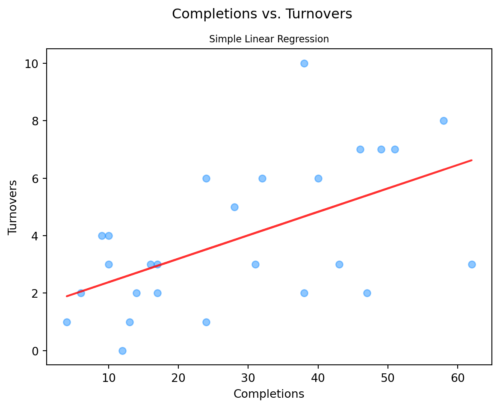

This is the third blog post in a series of posts for my class on machine learning at Virginia Tech. Here we will discuss regression, one of the most common techniques in machine learning that helps us understand the relationship between variables. We’ll cover linear regression and nonlinear regression, and we’ll introduce the concept of overfitting.
The Data
We’ve already introduced the dataset we’ll be using for this blog series in the previous blogs. In case you didn’t read them, however, here’s a quick summary.
The data was collected by Burn, the VT Men’s Ultimate Club. Ultimate, also known simply as frisbee, is a game that involves players trying to throw a disc between themselves with the goal of being in their team’s endzone with the disc, scoring them a point. Don’t worry too much about the intricacies of ultimate; the machine learning concepts should still make sense regardless.
Like in my last blog, we’ll be using a spinoff of the initial dataset. We’ll be using the summarized data of each player on Burn for our regression purposes.
Code
```{python}import numpy as npimport pandas as pddat = pd.read_csv("playDatSteelCity23.csv")dat = dat.drop(['Unnamed: 0'], axis=1)dat.head()```
Player
ActivePoss
ActivePossScored
ScorePerc
Touches
PickUp
CenterThrow
DumpThrow
SwingThrow
UpLineThrow
...
RecEPA
HanEPARes
HanEPA2
HanEPATurn
RecEPATurn
EPA
TourneyScore
TourneyGrade
EPAPerPoss
EPAPerTouch
0
AR
20
7
35.0
54
6
0
0
9
2
...
0.398
0.718
1.108
-0.420
0.000
1.248
1.00
A
0.062377
0.023103
1
AK
10
5
50.0
25
0
0
0
2
0
...
0.200
0.300
0.307
0.000
0.000
0.248
0.33
B
0.024833
0.009933
2
JL
41
15
36.6
115
2
0
3
21
6
...
1.843
0.956
-0.073
-2.074
-0.416
1.512
0.95
B
0.036869
0.013145
3
ZA
16
7
43.8
40
4
1
1
5
3
...
-0.101
0.415
0.589
-0.829
-0.209
0.230
0.59
B
0.014361
0.005744
4
CM
29
10
34.5
119
19
2
5
12
5
...
0.229
0.637
0.612
-1.915
0.000
0.583
0.16
C
0.020089
0.004896
5 rows × 92 columns
Regression
In regression analysis, we examine how one variable, called the dependent variable, is related to one or more independent variables. The dependent variables is the one we want to predict or understand, while the independent variables are the ones we use to make those predictions. The dependent variable is also called the response, while the independent variables are also known as features.
Regression analysis helps us find the mathematical model that best fits the data and can be used to interpret the relationship between the variables. The model can take a multitude of forms, depending on the nature of the data and the relationships within it.
Simple Linear Regression
The most basic type of regression is linear. For now, we’ll only consider cases where there’s just a single independent variable. We use linear regression when we assume the relationship between the independent variable and the dependent variable to be linear.
To start off, you should have a set of data points that represent different pairs of values. We’ll use an example: we have the number of completions and the number of turnovers each player on Burn made. Now, we want to know if there is a relationship between the number of completions and turnovers. Linear regression outputs a line that best fits the data points. This is known as the regression line or the line of best fit.
The regression line can be thought of as a sort of trend line that shows the general direction of the relationship between two variables. Assuming the line does its job well, we can use it to make predictions about one variables (our response) based on the other (our feature). In our example, we can use the regression line to predict a player’s number of turnovers based on their number of completions. The general form for simple linear regression is:
\[
Y = b_{0} + b_{1}X
\] In our example, \(Y\) is the turnover count and \(X\) is the completion count.You can tell this is a linear equation, where \(b_{0}\) is the y-intercept and \(b_{1}\) is the slope. The linear regression model attempts to find the coefficients \(b_{0}\) and \(b_{1}\) that minimizes the distance between the resulting line and the data points. Typically, a least-squares approach is used, where the line that minimizes the sum of squares, the sum of all the squared distances between the data points and the regression line. Let’s try it out on our data:
Code
```{python}from sklearn.linear_model import LinearRegressionfrom sklearn.metrics import mean_squared_error # metric for evaluating regression modelfrom sklearn.metrics import mean_absolute_error # metric for evaluating regression modelfrom sklearn.metrics import r2_score # metric for evaluating regression modelimport matplotlib.pyplot as pltX = dat['Completion']X = X.array.reshape(-1, 1)y = dat['HanTurn']lin_reg = LinearRegression().fit(X, y)y_pred = lin_reg.predict(X)print("Simple Linear Regression Results:")print("MAE:", mean_absolute_error(y, y_pred))print("MSE:", mean_squared_error(y, y_pred))print("r2:", r2_score(y, y_pred))plt.scatter(X, y, alpha =0.5, c ='dodgerblue')plt.plot(X, lin_reg.coef_*X + lin_reg.intercept_, 'r', alpha =0.8)plt.suptitle('Completions vs. Turnovers')plt.title('Simple Linear Regression', fontsize='small')plt.xlabel('Completions')plt.ylabel('Turnovers')plt.show()```
Simple Linear Regression Results:
MAE: 1.7046452385680408
MSE: 4.266265390223901
r2: 0.3095534106317076

There definitely appears to be a relationship between the two variables. The general trend is that the more completions a player has, the turnovers he has as well. However, with an \(r^{2}\) score of 0.31, there are obviously other factors at play.
Multiple Linear Regression
Let’s try to find some of those factors and add them to our model. Doing so will transform our simple linear model to a multiple linear one. This is where we try to predict the relationship between a dependent variable and two or more independent variables, still under the assumption that the relationships are linear. Just like with simple linear regression, the goal is to find the regression line that minimizes the distances between it and the data points. The general form for simple linear regression is:
Not that different from the previous formula, right? We still have our y-intercept and the slope for our first feature, but now we add the linear relationship of the second feature and all other features in the model.
Let’s go back to our data and pick out some features to add to our model. We’ll try using the players’ throwing error rates and their average throw distance, in addition to their number of completions. The objective is still to estimate the number of turnovers.
Code
```{python}X = dat[['Completion', 'HanErrorPerc', 'AvgThrow']]lin_reg = LinearRegression().fit(X, y)y_pred = lin_reg.predict(X)print("Multiple Linear Regression Results:")print("MAE:", mean_absolute_error(y, y_pred))print("MSE:", mean_squared_error(y, y_pred))print("r2:", r2_score(y, y_pred))plt.scatter(y, y_pred, alpha =0.5, c ='dodgerblue')plt.plot(y, y, 'r', alpha =0.8)plt.suptitle('True vs. Predicted')plt.title('Multiple Linear Regression', fontsize='small')plt.xlabel('True Turnover Count')plt.ylabel('Predicted Turnover Count')plt.show()print("Slope for Completion Count: ", round(lin_reg.coef_[0], 2))print("Slope for Throwing Error Rate: ", round(lin_reg.coef_[1], 2))print("Slope for Average Throw Distance: ", round(lin_reg.coef_[2], 2))```
Multiple Linear Regression Results:
MAE: 1.1226947869586312
MSE: 1.895917072931667
r2: 0.6931673590371541
Slope for Completion Count: 0.11
Slope for Throwing Error Rate: -0.17
Slope for Average Throw Distance: 0.36
This multiple linear model does better than the simple one. With an \(r^{2}\) coefficient of 0.69, our three features are doing a solid job estimating the number of turnovers each player has. The slope of completion count is positive, meaning the more completions, the more turnovers. The slope of the throwing error rate is negative, though that feature ranges from -100 to 0, where 0 is no errors and -100 is an throwing error every throw. Thus, the model is suggesting that the more throwing errors, the more turnovers. And lastly, the slope of the average throw distance was also positive, indicating the more a player throws it farther downfield, the more turnovers.
Nonlinear Regression
While our multiple linear regression model performed fairly well at estimating the number of completions, it’s possible we can do a lot better. We assumed that the relationship between the response and each of the features was linear, but that’s not necessarily the case. That leads us to the consideration of nonlinear regression.
Nonlinear regression allows us to capture more complex patterns and curves in the data. To perform nonlinear regression, we use mathematical functions, like exponential, logarithmic, polynomial, or sigmoid. The goal of nonlinear regression is similar to linear regression: we aim to find the best-fitting model that minimizes the distance between the predicted values and the actual values of the response. The only difference is that now, there is no regression line. Instead, there’s a regression curve or maybe a something even more complex.
The nonlinear regression model we’re going to test out here is polynomial regression. These are used when the relationship can be approximated by a polynomial equation, allowing for curved relationships. We’ll try building a quadratic regression, a polyonmial regression with a maximum degree of 2. The general formula a quadratic regression is:
Our model performs even better than before! Now it has an \(r^{2}\) coefficient of 0.88. While this can be considered good news, we have to be cautious: we don’t want to overfit the data.
Overfitting
Overfitting is a phenomenon that occurs when a statistical model becomes too complex and starts to fit the data too closely. The model becomes too specific to the data it’s being trained on that it fails to generalize well to new data. When a model is overfit, it captures not only the underlying patterns and relationships in the data but the noise as well. As a result, the model may perform exceptionally on training data but be completely useless at actually predicting data past the data it was trained on.
Models that are overly complex and have too many features allow the model to fit to noise, not signal (underlying patterns). Take, for example, our polynomial regression model when we set the maximum degree to 4:
This model is so complex and has so many features that it has completely overfitted to the data it was provided. While an \(r^{2}\) value of 1.00 sounds desirable, the model likely won’t perform well in predicting the turnover counts of players in the next tournament.
Conclusion
Overfitting is one of the most common pitfalls in machine learning. There are many techniques that can be employed to mitigate overfitting, like regularization and cross-validation, but we won’t cover them in this blog. For now, take pride in learning about regression models, but be wary of overly complex models or results that seem too good to be true. And be sure to check out the next installment of this series, and have a great day!